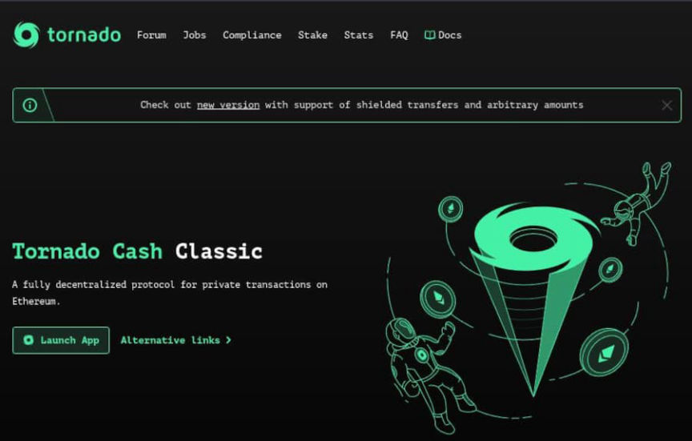
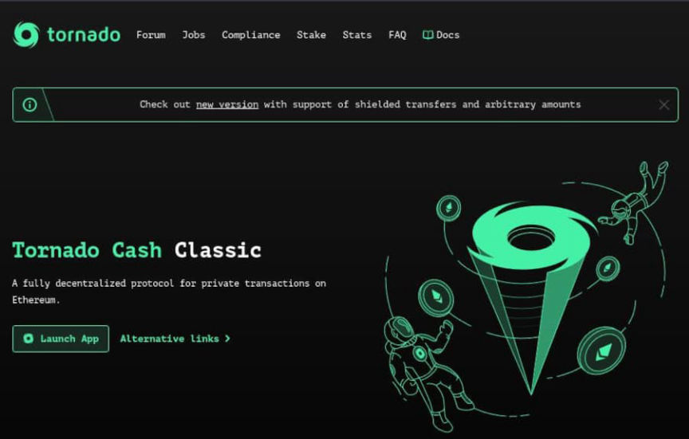

US Treasury Sanctioned Tornado Cash
The U.S. Treasury sanctioned Ethereum’s “best-known coin mixing service,” Tornado Cash (<code>https://tornado.cash</code>).
On August 8, 2022, the U.S. Department of the Treasury’s Office of Foreign Assets Control (OFAC) sanctioned the Tornado Cash Ethereum mixing service. According to the Treasury’s announcement, purported criminals have laundered more than $7 billion worth of cryptocurrency through the service since 2019.
The Lazarus Group allegedly laundered $455 million worth of cryptocurrency through Tornado Cash. The Treasury has used money laundering by the Lazarus Group as partial justification for sanctioning other cryptocurrency exchanges, including Blender.io.
“Today, Treasury is sanctioning Tornado Cash, a virtual currency mixer that launders the proceeds of cybercrimes, including those committed against victims in the United States,” said Under Secretary of the Treasury for Terrorism and Financial Intelligence Brian E. Nelson. “Despite public assurances otherwise, Tornado Cash has repeatedly failed to impose effective controls designed to stop it from laundering funds for malicious cyber actors on a regular basis and without basic measures to address its risks. Treasury will continue to aggressively pursue actions against mixers that launder virtual currency for criminals and those who assist them.”
OFAC added Tornado Cash to its Specially Designated Nationals list. As a result, U.S. citizens and other entities are prohibited from interacting or doing business with Tornado Cash. Violators face legal repercussions, including criminal charges.
“The protocol was specifically designed this way to be unstoppable, because it wouldn’t make much sense if some third party like developers would have control over it. This would be the same as if someone had control over Bitcoin or Ethereum,” Tornado Cash co-founder Roman Semenov told CoinDesk.
CoinDesk, in the same January 2022 article, described Tornado Cash’s operations:
“The way the protocol is designed, decentralized and autonomous much like decentralized finance (DeFi) protocols, means there’s nobody in charge. There’s no corporate office, executive team or CEO where the buck stops. Semenov said there’s no backend, and the user interface comes from an Ethereum Name Service domain – a service that represents Ethereum addresses as familiar-sounding domain names.”
The Treasury’s announcement called cryptocurrency mixers that assist criminals a “threat to <abbr title="I am not going to say it">U.S. national security.”</abbr>

<details id="the-following-addresses-have-been-added-to-the-specially-designated-nationals-list"><summary class="u__s a2w">The following addresses have been added to the Specially Designated Nationals list</summary><div class="a2x">TORNADO CASH (a.k.a. TORNADO CASH CLASSIC; a.k.a. TORNADO CASH NOVA); Website tornado.cash; Digital Currency Address - ETH 0x8589427373D6D84E98730D7795D8f6f8731FDA16; alt. Digital Currency Address - ETH 0x722122dF12D4e14e13Ac3b6895a86e84145b6967; alt. Digital Currency Address - ETH 0xDD4c48C0B24039969fC16D1cdF626eaB821d3384; alt. Digital Currency Address - ETH 0xd90e2f925DA726b50C4Ed8D0Fb90Ad053324F31b; alt. Digital Currency Address - ETH 0xd96f2B1c14Db8458374d9Aca76E26c3D18364307; alt. Digital Currency Address - ETH 0x4736dCf1b7A3d580672CcE6E7c65cd5cc9cFBa9D; alt. Digital Currency Address - ETH 0xD4B88Df4D29F5CedD6857912842cff3b20C8Cfa3; alt. Digital Currency Address - ETH 0x910Cbd523D972eb0a6f4cAe4618aD62622b39DbF; alt. Digital Currency Address - ETH 0xA160cdAB225685dA1d56aa342Ad8841c3b53f291; alt. Digital Currency Address - ETH 0xFD8610d20aA15b7B2E3Be39B396a1bC3516c7144; alt. Digital Currency Address - ETH 0xF60dD140cFf0706bAE9Cd734Ac3ae76AD9eBC32A; alt. Digital Currency Address - ETH 0x22aaA7720ddd5388A3c0A3333430953C68f1849b; alt. Digital Currency Address - ETH 0xBA214C1c1928a32Bffe790263E38B4Af9bFCD659; alt. Digital Currency Address - ETH 0xb1C8094B234DcE6e03f10a5b673c1d8C69739A00; alt. Digital Currency Address - ETH 0x527653eA119F3E6a1F5BD18fbF4714081D7B31ce; alt. Digital Currency Address - ETH 0x58E8dCC13BE9780fC42E8723D8EaD4CF46943dF2; alt. Digital Currency Address - ETH 0xD691F27f38B395864Ea86CfC7253969B409c362d; alt. Digital Currency Address - ETH 0xaEaaC358560e11f52454D997AAFF2c5731B6f8a6; alt. Digital Currency Address - ETH 0x1356c899D8C9467C7f71C195612F8A395aBf2f0a; alt. Digital Currency Address - ETH 0xA60C772958a3eD56c1F15dD055bA37AC8e523a0D; alt. Digital Currency Address - ETH 0x169AD27A470D064DEDE56a2D3ff727986b15D52B; alt. Digital Currency Address - ETH 0x0836222F2B2B24A3F36f98668Ed8F0B38D1a872f; alt. Digital Currency Address - ETH 0xF67721A2D8F736E75a49FdD7FAd2e31D8676542a; alt. Digital Currency Address - ETH 0x9AD122c22B14202B4490eDAf288FDb3C7cb3ff5E; alt. Digital Currency Address - ETH 0x905b63Fff465B9fFBF41DeA908CEb12478ec7601; alt. Digital Currency Address - ETH 0x07687e702b410Fa43f4cB4Af7FA097918ffD2730; alt. Digital Currency Address - ETH 0x94A1B5CdB22c43faab4AbEb5c74999895464Ddaf; alt. Digital Currency Address - ETH 0xb541fc07bC7619fD4062A54d96268525cBC6FfEF; alt. Digital Currency Address - ETH 0x12D66f87A04A9E220743712cE6d9bB1B5616B8Fc; alt. Digital Currency Address - ETH 0x47CE0C6eD5B0Ce3d3A51fdb1C52DC66a7c3c2936; alt. Digital Currency Address - ETH 0x23773E65ed146A459791799d01336DB287f25334; alt. Digital Currency Address - ETH 0xD21be7248e0197Ee08E0c20D4a96DEBdaC3D20Af; alt. Digital Currency Address - ETH 0x610B717796ad172B316836AC95a2ffad065CeaB4; alt. Digital Currency Address - ETH 0x178169B423a011fff22B9e3F3abeA13414dDD0F1; alt. Digital Currency Address - ETH 0xbB93e510BbCD0B7beb5A853875f9eC60275CF498; alt. Digital Currency Address - ETH 0x2717c5e28cf931547B621a5dddb772Ab6A35B701; alt. Digital Currency Address - ETH 0x03893a7c7463AE47D46bc7f091665f1893656003; alt. Digital Currency Address - ETH 0xCa0840578f57fE71599D29375e16783424023357; alt. Digital Currency Address - ETH 0x58E8dCC13BE9780fC42E8723D8EaD4CF46943dF2; Organization Established Date 2019; Digital Currency Address - USDC 0x8589427373D6D84E98730D7795D8f6f8731FDA16; alt. Digital Currency Address - USDC 0x722122dF12D4e14e13Ac3b6895a86e84145b6967; alt. Digital Currency Address - USDC 0xDD4c48C0B24039969fC16D1cdF626eaB821d3384; alt. Digital Currency Address - USDC 0xd90e2f925DA726b50C4Ed8D0Fb90Ad053324F31b; alt. Digital Currency Address - USDC 0xd96f2B1c14Db8458374d9Aca76E26c3D18364307; alt. Digital Currency Address - USDC 0x4736dCf1b7A3d580672CcE6E7c65cd5cc9cFBa9D [CYBER2].</details>
U.S. Treasury Sanctions Notorious Virtual Currency Mixer Tornado Cash | home.treasury.gov, archive.is, archive.org
On August 8, 2022, the U.S. Department of the Treasury’s Office of Foreign Assets Control (OFAC) sanctioned the Tornado Cash Ethereum mixing service. According to the Treasury’s announcement, purported criminals have laundered more than $7 billion worth of cryptocurrency through the service since 2019.
How Tornado Cash works
The Lazarus Group allegedly laundered $455 million worth of cryptocurrency through Tornado Cash. The Treasury has used money laundering by the Lazarus Group as partial justification for sanctioning other cryptocurrency exchanges, including Blender.io.
“Today, Treasury is sanctioning Tornado Cash, a virtual currency mixer that launders the proceeds of cybercrimes, including those committed against victims in the United States,” said Under Secretary of the Treasury for Terrorism and Financial Intelligence Brian E. Nelson. “Despite public assurances otherwise, Tornado Cash has repeatedly failed to impose effective controls designed to stop it from laundering funds for malicious cyber actors on a regular basis and without basic measures to address its risks. Treasury will continue to aggressively pursue actions against mixers that launder virtual currency for criminals and those who assist them.”
OFAC added Tornado Cash to its Specially Designated Nationals list. As a result, U.S. citizens and other entities are prohibited from interacting or doing business with Tornado Cash. Violators face legal repercussions, including criminal charges.
How Tornado Cash achieves privacy
“The protocol was specifically designed this way to be unstoppable, because it wouldn’t make much sense if some third party like developers would have control over it. This would be the same as if someone had control over Bitcoin or Ethereum,” Tornado Cash co-founder Roman Semenov told CoinDesk.
CoinDesk, in the same January 2022 article, described Tornado Cash’s operations:
“The way the protocol is designed, decentralized and autonomous much like decentralized finance (DeFi) protocols, means there’s nobody in charge. There’s no corporate office, executive team or CEO where the buck stops. Semenov said there’s no backend, and the user interface comes from an Ethereum Name Service domain – a service that represents Ethereum addresses as familiar-sounding domain names.”
The Treasury’s announcement called cryptocurrency mixers that assist criminals a “threat to <abbr title="I am not going to say it">U.S. national security.”</abbr>

Tornado.cash was online when I started this article.
<details id="the-following-addresses-have-been-added-to-the-specially-designated-nationals-list"><summary class="u__s a2w">The following addresses have been added to the Specially Designated Nationals list</summary><div class="a2x">TORNADO CASH (a.k.a. TORNADO CASH CLASSIC; a.k.a. TORNADO CASH NOVA); Website tornado.cash; Digital Currency Address - ETH 0x8589427373D6D84E98730D7795D8f6f8731FDA16; alt. Digital Currency Address - ETH 0x722122dF12D4e14e13Ac3b6895a86e84145b6967; alt. Digital Currency Address - ETH 0xDD4c48C0B24039969fC16D1cdF626eaB821d3384; alt. Digital Currency Address - ETH 0xd90e2f925DA726b50C4Ed8D0Fb90Ad053324F31b; alt. Digital Currency Address - ETH 0xd96f2B1c14Db8458374d9Aca76E26c3D18364307; alt. Digital Currency Address - ETH 0x4736dCf1b7A3d580672CcE6E7c65cd5cc9cFBa9D; alt. Digital Currency Address - ETH 0xD4B88Df4D29F5CedD6857912842cff3b20C8Cfa3; alt. Digital Currency Address - ETH 0x910Cbd523D972eb0a6f4cAe4618aD62622b39DbF; alt. Digital Currency Address - ETH 0xA160cdAB225685dA1d56aa342Ad8841c3b53f291; alt. Digital Currency Address - ETH 0xFD8610d20aA15b7B2E3Be39B396a1bC3516c7144; alt. Digital Currency Address - ETH 0xF60dD140cFf0706bAE9Cd734Ac3ae76AD9eBC32A; alt. Digital Currency Address - ETH 0x22aaA7720ddd5388A3c0A3333430953C68f1849b; alt. Digital Currency Address - ETH 0xBA214C1c1928a32Bffe790263E38B4Af9bFCD659; alt. Digital Currency Address - ETH 0xb1C8094B234DcE6e03f10a5b673c1d8C69739A00; alt. Digital Currency Address - ETH 0x527653eA119F3E6a1F5BD18fbF4714081D7B31ce; alt. Digital Currency Address - ETH 0x58E8dCC13BE9780fC42E8723D8EaD4CF46943dF2; alt. Digital Currency Address - ETH 0xD691F27f38B395864Ea86CfC7253969B409c362d; alt. Digital Currency Address - ETH 0xaEaaC358560e11f52454D997AAFF2c5731B6f8a6; alt. Digital Currency Address - ETH 0x1356c899D8C9467C7f71C195612F8A395aBf2f0a; alt. Digital Currency Address - ETH 0xA60C772958a3eD56c1F15dD055bA37AC8e523a0D; alt. Digital Currency Address - ETH 0x169AD27A470D064DEDE56a2D3ff727986b15D52B; alt. Digital Currency Address - ETH 0x0836222F2B2B24A3F36f98668Ed8F0B38D1a872f; alt. Digital Currency Address - ETH 0xF67721A2D8F736E75a49FdD7FAd2e31D8676542a; alt. Digital Currency Address - ETH 0x9AD122c22B14202B4490eDAf288FDb3C7cb3ff5E; alt. Digital Currency Address - ETH 0x905b63Fff465B9fFBF41DeA908CEb12478ec7601; alt. Digital Currency Address - ETH 0x07687e702b410Fa43f4cB4Af7FA097918ffD2730; alt. Digital Currency Address - ETH 0x94A1B5CdB22c43faab4AbEb5c74999895464Ddaf; alt. Digital Currency Address - ETH 0xb541fc07bC7619fD4062A54d96268525cBC6FfEF; alt. Digital Currency Address - ETH 0x12D66f87A04A9E220743712cE6d9bB1B5616B8Fc; alt. Digital Currency Address - ETH 0x47CE0C6eD5B0Ce3d3A51fdb1C52DC66a7c3c2936; alt. Digital Currency Address - ETH 0x23773E65ed146A459791799d01336DB287f25334; alt. Digital Currency Address - ETH 0xD21be7248e0197Ee08E0c20D4a96DEBdaC3D20Af; alt. Digital Currency Address - ETH 0x610B717796ad172B316836AC95a2ffad065CeaB4; alt. Digital Currency Address - ETH 0x178169B423a011fff22B9e3F3abeA13414dDD0F1; alt. Digital Currency Address - ETH 0xbB93e510BbCD0B7beb5A853875f9eC60275CF498; alt. Digital Currency Address - ETH 0x2717c5e28cf931547B621a5dddb772Ab6A35B701; alt. Digital Currency Address - ETH 0x03893a7c7463AE47D46bc7f091665f1893656003; alt. Digital Currency Address - ETH 0xCa0840578f57fE71599D29375e16783424023357; alt. Digital Currency Address - ETH 0x58E8dCC13BE9780fC42E8723D8EaD4CF46943dF2; Organization Established Date 2019; Digital Currency Address - USDC 0x8589427373D6D84E98730D7795D8f6f8731FDA16; alt. Digital Currency Address - USDC 0x722122dF12D4e14e13Ac3b6895a86e84145b6967; alt. Digital Currency Address - USDC 0xDD4c48C0B24039969fC16D1cdF626eaB821d3384; alt. Digital Currency Address - USDC 0xd90e2f925DA726b50C4Ed8D0Fb90Ad053324F31b; alt. Digital Currency Address - USDC 0xd96f2B1c14Db8458374d9Aca76E26c3D18364307; alt. Digital Currency Address - USDC 0x4736dCf1b7A3d580672CcE6E7c65cd5cc9cFBa9D [CYBER2].</details>
U.S. Treasury Sanctions Notorious Virtual Currency Mixer Tornado Cash | home.treasury.gov, archive.is, archive.org